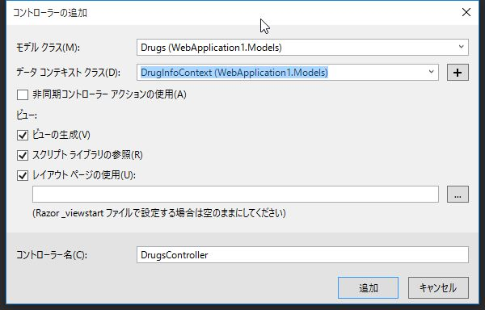

3. EntityFramework によるデータベースファースト開発
EntityFrameworkによるソースコードの自動生成
EntityFramework によって Webアプリケーションの雛形を作成します。
(1) プロジェクトの作成
DrugInfoSearch という名前で新しいプロジェクトを作成します。

テンプレート は Empty を選択します。MVC にチェックを入れ、OK をクリックします。

(2) EntityFrameworkのインストール
NuGet で 最新の EntityFramework をインストールします。
(3) EDMファイルの作成


一度ビルドを行う。
(4) コントローラー、ビューの作成
スキャフォールディング(Scaffolding、「骨組み」「足場」という意味)によって、 Create（作成）、Read（参照）、Update（更新）、Delete（削除）のような定型的なコードの骨組みを自動生成できます。
ソリューション エクスプローラー で Controllers を右クリック -> 追加 -> 新規スキャフォールディングアイテム を選択します。

Entity Framework を使用した、ビューがあるMVC5 コントローラー を選択し、追加 をクリックします。

モデル クラス に Drugs 、 データ コンテキスト クラス に DrugInfoContext を選択し、追加 をクリックします。

(5) 動作確認